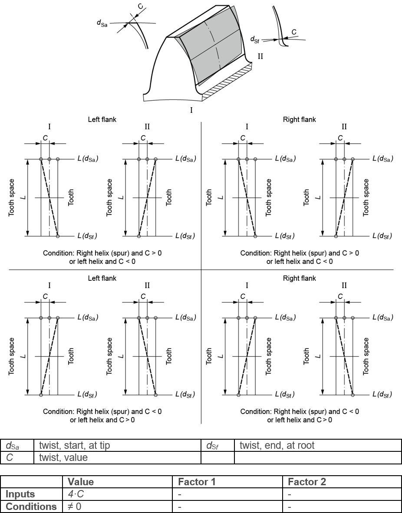

|
|
|


扭转
是横截面齿廓沿螺旋线的扭转。通常，该角度从有效齿面的起点到终点呈线性递增。ISO 21771 中的定义不完整，因为它只描述了右齿面上的扭转。根据 GFT（Getrag-Ford-Transmissions）的定义更完整，因此是行业中使用的标准方案。修形 C 可以是正值或负值。

图 15.57：扭转
此处使用的符号也显示在螺旋角修形各章节（参见 螺旋角修形，锥形 一章）及后续章节，以及压力角修形各章节（参见 压力角修形（值） 一章）及后续章节中。
Twist
is the torsion of the transverse section profile along a helix. Usually, the angle increases in a linear progression from the start of the effective flank to its end. The definition in ISO 21771 is incomplete because it only describes twist on the right flank. The definition according to GFT (Getrag-Ford-Transmissions) is more complete and is therefore the standard solution used in industry. Modification C can be either a positive or negative value.
Figure 15.57: Twist
The notation used here is also shown in the helix angle modifications sections (see chapter Helix angle modification, conical) and following sections and pressure angle modifications (see chapter Pressure angle modification (value)) and following section.